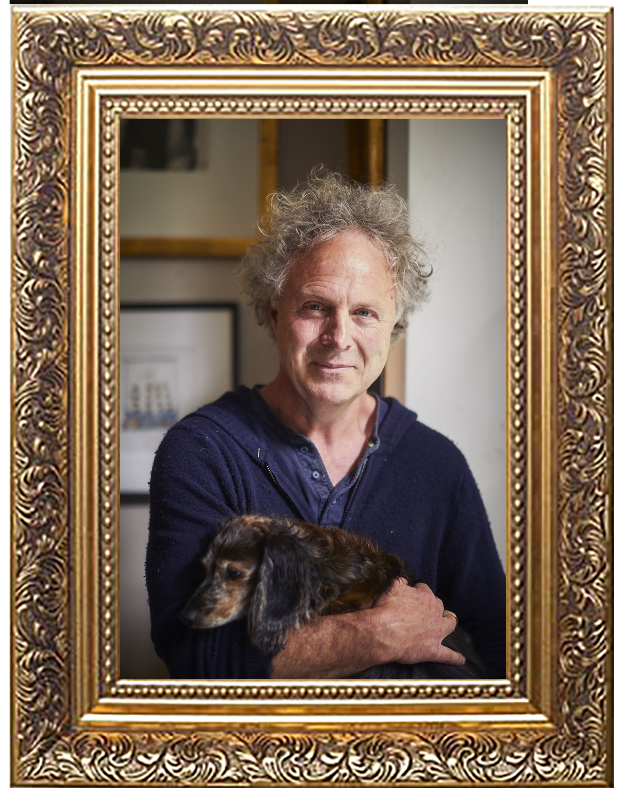
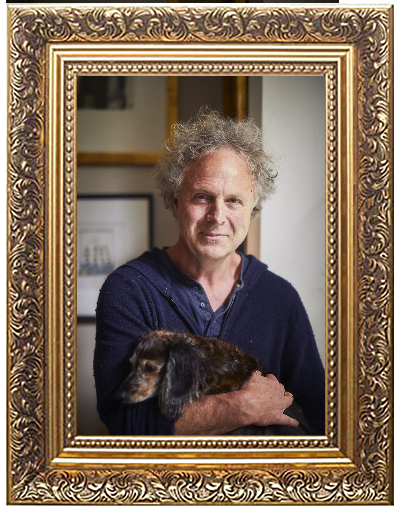

The earliest record of this form of art can be traced back to 15,000 B.C. An illustration is a visual representation or depiction such as a drawing, sketch or other kind of image that is created using a graphical representation. Hayao Miyazaki is a japanese illustrator and director and has created multiple japanese films that are very well known to this day. Lauren Mortimer has illustrated childrens book covers. Roy Fox Lichtenstein was an American pop artist whose work defined the premise of pop art through parody. Visoth Kakvei uses doodling to create simplistic yet complicated and compelling designs. Charlie Mackesy is a British artist and author whose book The Boy, The Mole, The Fox, And The Horse has sold over 1.4 million copies.

 
